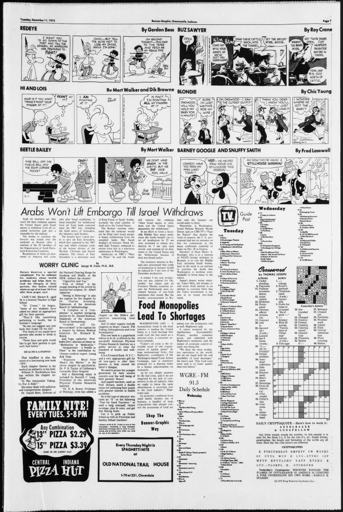

HN-696 · December 11, 1973 · Politics, Government & Diplomacy > Diplomacy, Treaties & International Relations > Diplomatic crises
Source: Banner-Graphic, p. 7 — original page; U.S. State Department, Oil Embargo 1973–1974.
Report: “Arabs Won't Lift Embargo Till Israel Withdraws†said oil ministers demanded a withdrawal timetable from territories captured in 1967 before restoring shipments to the United States.
Assessment: Documented diplomatic and economic leverage, not evidence that the conditions were ever implemented as printed. The embargo became part of the 1973–1974 energy crisis and was eventually lifted following diplomatic negotiations. The ministers' declaration expressed a bargaining position at that date; it is not the complete subsequent history of petroleum supply or Arab–Israeli negotiations.
Authentic images retrieved from Hoosier State Chronicles (Indiana State Library). Article crops are located using the archive's own OCR word coordinates and rendered at native crop resolution; article clips are assembled from the archive's own article-block images; page images marked "archive tiles" are stitched from the archive's own tiled page service at its 256-px tile cap; page images marked "issue PDF" are single pages rasterised from the archive's own issue PDF, with the page chosen by matching the headline against the PDF's text layer; page scans are reduced-size access renditions. No images were generated, mocked, or retouched.

Status: Archive images acquired
Authentic archive-owned image renditions were retrieved for this record and are displayed above. The source-acquisition manifest preserves the original pre-acquisition feasibility assessment.
URL (preserved verbatim): https://newspapers.library.in.gov/?a=d&d=BG19731211-01.1.7
Saved research report: Historical_Newspaper_Event_Research_678-702_2026-10-23.md
Evidence note: A newspaper report means a historical publication made a claim; it does not establish that claim as fact. Contemporary reporting is separated from later scholarly context and our own assessment.